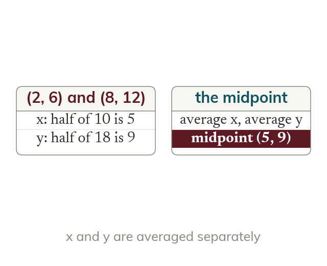

The midpoint is an average
The midpoint's coordinates are the averages of the endpoints' coordinates. The x and the y are averaged separately.
The midpoint of two points has coordinates that are the averages of the endpoint coordinates, found separately for x and for y.